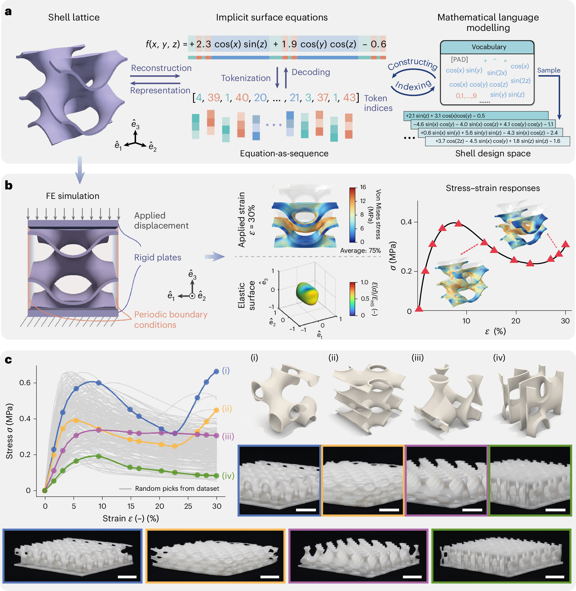
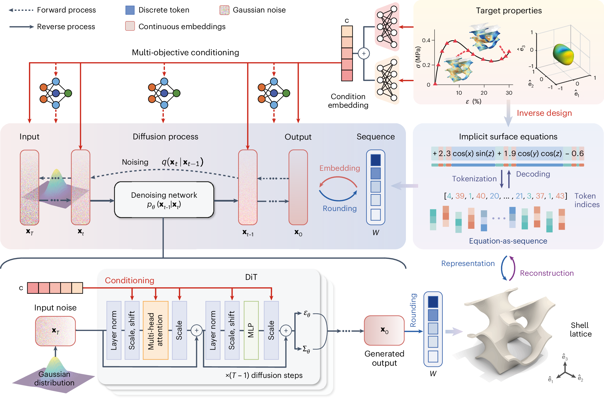
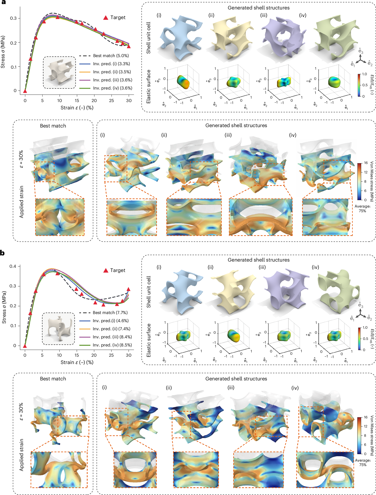
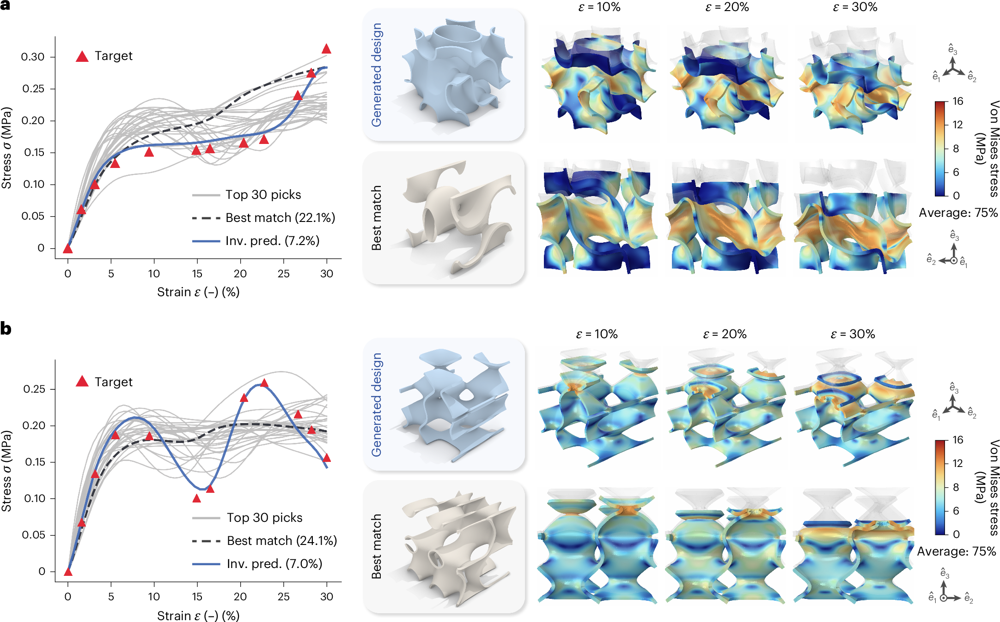
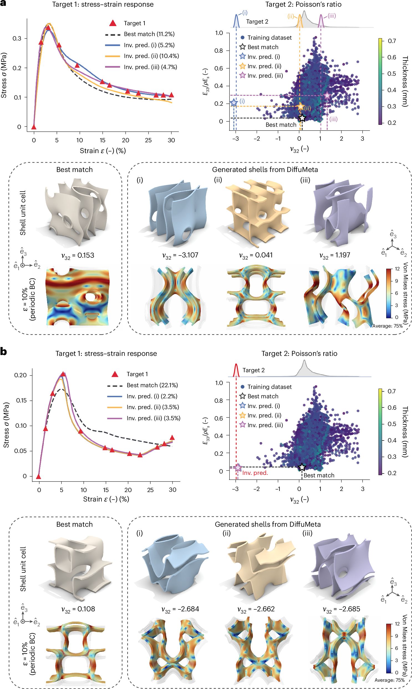
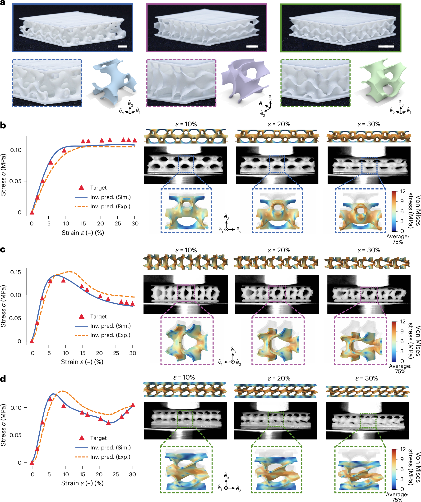

论文资料
Algebraic language models for inverse design of metamaterials via diffusion transformers
已取得公开摘要，图文解读尚未完成
已取得公开摘要，图文解读尚未完成。取得完整资料并通过核验后，这个地址会更新为图文解读。
公开摘要
Generative machine learning models have revolutionized material discovery by capturing complex structure–property relationships, yet extending these approaches to the inverse design of three-dimensional metamaterials remains limited by computational complexity and underexplored design spaces due to the lack of expressive representations. Here we present DiffuMeta, a generative framework integrating diffusion transformers with an algebraic language representation, encoding three-dimensional geometries as mathematical sentences. This compact, unified parameterization spans diverse topologies, enabling the direct application of transformers to structural design. DiffuMeta leverages diffusion models to generate new shell structures with precisely targeted stress–strain responses under large deformations, accounting for buckling and contact while addressing the inherent one-to-many mapping by producing diverse solutions. Uniquely, our approach enables simultaneous control over multiple mechanical objectives, including linear and nonlinear responses beyond training domains. Experimental validation of fabricated structures further confirms the efficacy of our approach for accelerated design of metamaterials and structures with tailored properties.
原图未改动。以下图注来自标注的来源，不据此补写摘要未报告的实验结论。
已取得的论文原图


原文图注与出处
a , A shell lattice is generated from the implicit level set equation, which can be tokenized into a sequence of discrete mathematical tokens drawn from a structured vocabulary. New shell designs can be generated by sampling and recombining these tokens. b , To obtain the stress–strain responses, we conduct FE simulations by imposing rigid plates on the top and the bottom with periodic boundary conditions on the lateral surfaces. A quasi-static compressive strain of up to 30% along the \({\hat{e}}_{3}\) -direction is applied. The overall effective stress–strain response is extracted from the reaction forces. A representative deformed shell unit cell is shown at an applied strain of 30%. Also shown is the 3D elastic surface plot illustrating the directional effective Young’s modulus (obtained via FE homogenization). c , Stress–strain responses of 200 structures randomly drawn from the dataset, and selected representative examples with distinct mechanical behaviours. Also shown are the photos of fabricated shell structures, each obtained by arranging corresponding shell unit cells in a 5 × 5 × 1 array, with a total size of 50 mm × 50 mm × 10 mm. Scale bars: 10 mm.
Zheng, Li et al.
原文图页 · CC BY 4.0

原文图注与出处
The process begins with discrete equation sequences representing implicit surface geometries, which are converted into a continuous space. During the forward (noising) process, Gaussian noise is progressively added to the embeddings over T timesteps. The reverse (denoising) process uses a DiT to iteratively remove noise and reconstruct the original embeddings. To enable property-conditioned generation, target mechanical properties (stress–strain responses σ and homogenized stiffness tensor \({\mathbb{C}}\) ) are encoded into conditioning embeddings and integrated into the denoising network through cross-attention and adaLN mechanisms. Following denoising, a trainable rounding step maps the continuous outputs back to discrete token sequences, which are then decoded to generate the corresponding shell geometries with desired mechanical characteristics. MLP, multilayer perceptron.
Zheng, Li et al.
原文图页 · CC BY 4.0

原文图注与出处
a , b , The model is conditioned on target responses (denoted by red triangles) exhibiting pronounced softening ( a ) and initial softening and subsequent hardening ( b ). Generated designs (i)–(iv) show diverse geometric configurations that achieve similar mechanical behaviour through different deformation mechanisms. Each example shows the deformed unit cells of both the best match from the training dataset and the generated designs at 30% strain, revealing varying stress distributions and structural responses. Elastic surface plots demonstrate distinct anisotropic 3D elastic stiffnesses for each generated design (normalized by the isotropic Hashin and Shtrikman (HS) upper bounds, E HS ). All shown stress–strain responses and elastic surfaces were obtained via FE analysis, with n.r.m.s.e. values (in brackets) quantifying design accuracy relative to target responses. inv. pred., inverse prediction.
Zheng, Li et al.
原文图页 · CC BY 4.0

原文图注与出处
a , b , The diffusion model generates designs conditioned on target stress–strain curves (denoted by red triangles) exhibiting a stress plateau and subsequent hardening ( a ) and pronounced buckling-induced stress peaks at 8% and 22% strain ( b ). These responses extend well beyond the training distribution. We highlight the top 30 closest matches from the training set in grey in a and b , selected based on n.r.m.s.e., which deviate substantially from the target. All shown stress–strain responses and elastic surfaces were obtained via FE analysis, with n.r.m.s.e. values (in brackets) quantifying design accuracy relative to target responses.
Zheng, Li et al.
原文图页 · CC BY 4.0已取得的论文原图


原文图注与出处
a , Generated shell designs conditioned on a target stress–strain response while achieving three distinct target effective (anisotropic) Poisson’s ratios (measured at small strains): ν 32 = −3.0, ν 32 = 0 and ν 32 = 1.0. b , Inverse design for unseen target property combinations, where both the stress–strain response and Poisson’s ratio ( ν 32 = −3.0) extend well beyond the training distribution. Each example shows the achieved Poisson’s ratio of the best match from the training dataset and the generated designs, compared with the distribution of training samples in the relevant property space (each dot represents a unit cell in the training data, colour-coded by shell thickness). The effective directional Young’s modulus E 33 is normalized by the Young’s modulus of the base material E s and the relative density ρ . The simulated samples at 10% compressive strain illustrate their lateral deformations. All shown stress–strain responses were obtained via FE analysis, with n.r.m.s.e. values (in brackets) quantifying design accuracy relative to target responses.
Zheng, Li et al.
原文图页 · CC BY 4.0

原文图注与出处
a , Fabricated representative shell samples alongside their corresponding computer-aided design models. Samples are arranged in 5 × 5 × 1 arrays with 10% relative density. Scale bars: 10 mm. b – d , Comparison between experimental (Exp.) stress–strain responses (dashed lines) and FE simulation (Sim.) results (solid lines) for three distinct shell designs generated by DiffuMeta, exhibiting an extended stress plateau ( b ), pronounced softening ( c ) and initial softening followed by hardening ( d ), respectively. Target responses used as conditions for the diffusion model are indicated with red triangles. The deformed configurations of generated shell unit cells obtained from FE analysis at different strain levels are shown in 5 × 5 × 1 tessellations for visualization. The experimental results demonstrate overall good agreement with both the target responses and simulation predictions for the nonlinear behaviour, validating the effectiveness of the inverse design framework. Scale bars, 10 mm.
Zheng, Li et al.
原文图页 · CC BY 4.0